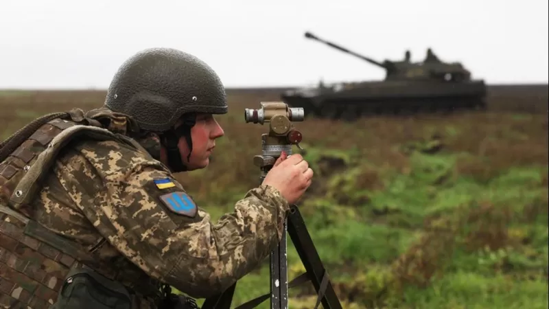

Zelenskiy: Polonya'ya düşen füze Ukrayna'ya ait değil

Ukrayna Cumhurbaşkanı Volodimir Zelenskiy, Salı günü Polonya’ya düşen ve 2 kişinin ölümüne yol açan füzeyla ilgili olarak ülkesinin sorumluluğu olmadığını söyledi. Ukraynalı üst düzey askeri yetkililerin, füzenin Ukrayna’ya ait olmadığı konusunda kendisine güvence verdiğini belirten Zelenskiy, "Soruşturmaya biz de dahil olmalıyız. Ukraynalı yetkililere patlama bölgesine girme izni verilmeli" dedi.
NATO Genel Sekreteri Jens Stoltenberg, Polonya’nın Ukrayna sınırına altı kilometre mesafedeki Przewodow köyünde bir tahıl işleme fabrikasına düşen füzenin “muhtemelen” Ukrayna’nın hava savunma füzesi olduğunu söylemişti. ABD Başkanı Joe Biden da Zelenskiy’nin “Füze, Ukrayna kaynaklı değil” açıklamasına şüpheyle yaklaşmış ve “Bulgular bu yönde değil” demişti. Rusya, Salı günü Ukrayna’nın birçok kentine eş zamanlı füze saldırıları düzenlemişti. İşgalin başladığı 24 Şubat’tan bu yana gerçekleştirilen en şiddetli saldırılarda Ukrayna hava savunma sistemleri aktif hale getirilmişti. Rusya bu saldırıları, Endonezya’nın Bali Adası’ndaki G20 zirvesi sırasında düzenlemiş ve NATO üyesi Polonya’ya füze düştüğü haberi savaşın tehlikeli bir şekilde tırmanabileceği kaygılarına yol açmıştı. Fakat Polonya Cumhurbaşkanı Andrzej Duda, füzenin “büyük ihtimalle” Ukrayna hava savunma birimleri tarafından fırlatıldığını belirterek “Aldığımız bilgiye göre bu Sovyetler Birliği döneminde yapılmış bir S-300 füzesi ve bunu Rus tarafının fırlattığına dair hiçbir bulgu yok” demişti.
NATO Genel Sekreteri Stoltenberg, BBC’ye yaptığı açıklamada Polonya’nın değerlendirmesine katıldığını ve olayın muhtemelen bir Ukrayna savunma füzesinden kaynaklandığını söyledi. Stoltenberg, “Ama ana mesaj, nihai sorumluluğun Rusya’ya ait olduğudur. Rusya, Ukrayna’ya karşı acımasız bir savaşa girişmeseydi bunlar olmayacaktı” dedi. Stoltenberg, NATO’nun Ukrayna’ya daha gelişmiş hava savuna sistemi verme taahhüdünde bulunduğunu söyledi. Ukrayna NATO üyesi değil ancak ittifaktan büyük miktarda askeri yardım alıyor. ABD’nin Birleşmiş Milletler Büyükelçisi Linda Thomas-Greenfield da BM Güvenlik Konseyi’ndeki konuşmasında nihai sorumluluğun Rusya’ya ait olduğunu söyledi. Thomas-Greenfield “Şu ana kadar tüm ayrıntıları bilmiyoruz. Ama bir şey kesin; Rusya’nın bu gereksiz işgali ve sivil altyapıyı hedef alan son füze saldırıları olmasaydı bu trajedi yaşanmayacaktı. BM Sözleşmesi açık. Ukrayna’nın kendini her türlü savunma hakkı var” diye konuştu.
ABD Genelkurmay Başkanı: Ukrayna'nın yakın zamanda zafer elde etmesi olası değil
Bu arada ABD Genelkurmay Başkanı Orgeneral Mike Milley, ülkenin doğusu ve güneyindeki karşı saldırılarla önemli kazanımlar elde eden ve Herson’u geri alan Ukrayna’nın Rusya karşısında “erken bir zafer” elde etmesinin olası görünmediğini söyledi. Milley, “Ukrayna’nın bir zafer kazanması – ki bu Rusya’yı Kırım dahil tüm Ukrayna topraklarından çıkarmak olarak tanımlanıyor- bunun yakın bir zamanda olma olasılığı askeri açıdan yüksek değil” diye konuştu. Mike Milley, bununla birlikte Rusya’nın askeri kayıplarının siyasi bir çözümün mümkün olabileceği anlamına geldiğini söyledi.
Rusya'dan yeni füze saldırısı
Rusya'dan yeni füze saldırısı Ukraynalı yetkililer, Rusya'nın bugün birkaç kente birden yeniden füze saldırıları düzenlediğini açıkladı. Saldırılarda bir roket fabrikasıyla bir gaz üretim tesisinin de hedef alındığı haber veriliyor. Rusya son bir ay içinde cephedeki kayıplarının ardından Ukrayna'nın enerji altyapısını çökertmeyi amaçlayan füze saldırılarına yönelmişti.